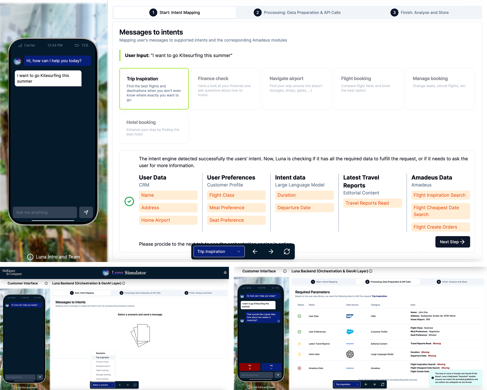
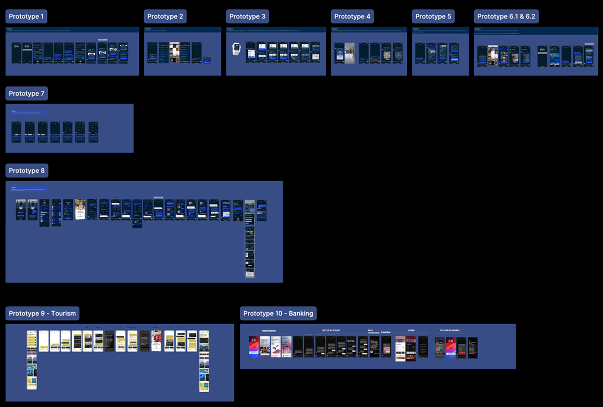
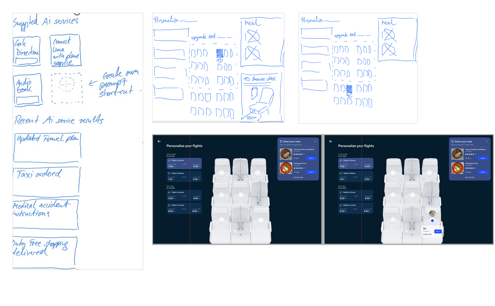

GenAI customer copilot
One AI copilot, designed once and configured for different clients.
I led experience design at McKinsey. I set the experience strategy and design direction for a white-label AI copilot, turning complex agent capabilities into one reusable customer experience.
Consumer brands in travel, retail and banking used it to explore GenAI applications through configurable prototypes.
I led. Conversational UX and AI interaction patterns · the design system behind every client skin · rapid prototyping and storyboards across industries · design partnership with AI engineering.
Outcome. 10+ projects · 20 to 30% projected NPS uplift · 30 to 40% cross-sell · Reusable client configurations.
Full case study · NDA
- 01 MandateThe business case for a configurable platform
- 02 Team & ways of workingResponsibilities, collaboration and the design decision
- 03 Orchestration simulatorA closer look at the real simulator
- 04 Conversational design systemPrinciples and reusable AI components
- 05 Prototypes & client buildsSketches, prototypes and selected walkthroughs
- 06 Outcomes & reflectionImpact, lessons and next iteration
Every client wanted its own GenAI copilot. Building ten would not scale.
Each client asked for its own assistant. Building ten separate copilots would have been slow, expensive and inconsistent, so we designed one platform whose conversational engine, reasoning and UI could be configured and re-skinned per client.
A bespoke build per client
One platform, configured per client
I owned the experience layer between the AI and the client.
I worked across engagement leadership, AI engineers building the orchestration layer and client teams configuring each copilot. I owned design systems, prototyping and storyboarding across the platform.
Experience design at the intersection of strategy and engineering.
Engagement leadership shaped client priorities. I led the design of the conversational experience and reusable interface, working alongside AI engineers responsible for the orchestration and integration layers. Client teams provided domain requirements and feedback for each configuration.
Standardise the behaviours. Configure the expression.
We kept shared interaction patterns, fallback, confirmation and human handoff consistent. Brand, tone, capabilities and connected data were configurable. The principle was to test bespoke requests against the common system before branching into client-specific UX.
Set the ambition for GenAI customer experience and owned client relationships.
- Conversational UX and AI patterns
- Design system for every skin
- prototypes across industries
- Storyboards for C-suite demos
Agents, reasoning, retrieval and integrations, built against the patterns we defined together.
Brand, data and rules set per client, without needing a redesign.
Data, agents and guardrails underneath. One interface on top.
The simulator makes the underlying AI behaviour tangible: follow how a customer request becomes an intent, how required data is checked, and where the experience asks for clarification.
Inside the real simulator
The tool we built for client workshops, step by step.

Rules for how the AI behaves, built into the components.
Six best-practice principles, implementation rules engineers could build to, and an atomic system that every client skin was assembled from.
Conversational AI components
The parts that make an AI conversation trustworthy, each with a defined job and rules for when it appears.
- Read your profile · BER, window seat
- Searched July fares · 42 results
- Ranked by price and direct flights
Ten prototype groups. Many industries.
Ten groups of prototypes, each validating output quality, user understanding and workflow fit: airline, conversational AI, travel and tourism, and banking.
The prototype wall

From sketch to screen

Airline client · product walkthrough
A 40-second walkthrough of the copilot on the airline's website, with the assistant docked at the side.
Travel and retail builds
Two more clients on the same platform.
My role, plus the team, equals the outcome.
The platform was a collaboration between design, AI engineering and client teams. My contribution was the experience layer and the system that let every deployment feel considered. The work also supported executive demonstrations and internal enablement.
- Conversational UX and AI patterns
- Design system for every client skin
- Prototypes and storyboards across industries
- Design and engineering alignment
- Engagement leadership and client strategy
- Agent orchestration and integrations
- Client configuration and deployment
- Testing and evaluation
Positioned as a scalable orchestration layer for AI-powered customer experiences, designed for autonomous teams to configure and deploy independently.
What this taught me.
- 01A shared conversational system only scales when teams agree which behaviours are non-negotiable; brand expression can change without changing confirmation, fallback or handoff.
- 02A polished demo can disguise uncertainty. Evaluating missing information, failed actions and human handoffs is as important as showing a successful conversation.
Bring evaluation into the design loop earlier.
In a future iteration, I would define measurable criteria for response quality, successful handoff and user confidence at the start of each prototype—not only assess how convincing the experience looks in a demo. That would make the boundary between a compelling concept and a production-ready product clearer.